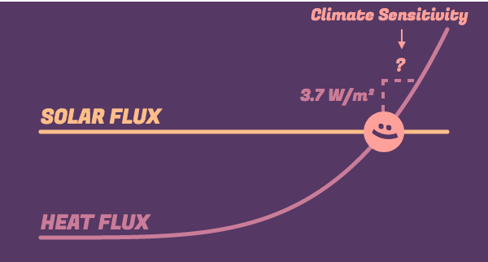

The higher a planet’s temperature, the more heat it radiates out into space. Here’s a graph representing this fact — let’s call this a planetary heat curve.
For now, picture each planet as sitting somewhere along this curve. Hotter planets would sit further to the right, colder ones to the left.
The graph shows us how intensely the planet radiates heat (measured in Watts per square meter) on the vertical axis, versus the planet's average temperature on the horizontal axis (measured in Kelvin). The hotter the planet, the more intensely it radiates heat. The curve follows a well-known law of heat flow.
We can use this curve to predict the temperature of a planet. Let's try Mars first.
We know that Mars receives about 110 W/m² of solar energy. So let's draw a horizontal line at 110 W/m².
In the graph above, the yellow line represents the solar energy flowing in to the planet. The purple line represents the heat energy flowing out of the planet.
There's something special about the point where the line meets the curve. Take a look at this simulation. (Solar flux refers to the incoming solar energy flow, and heat flux refers to the outgoing heat energy flow.)
Drag the planet to a different temperature and see what happens. (right = hotter, left = colder)
See how the planet always ends up at the point where the two curves intersect? Why does this happen?
When the planet is further above the point of intersection, its heat flux exceeds the solar flux. This means it loses more heat that it receives from the Sun. So, it'll cool down.
Similarly, when the planet is below the point of intersection, the solar flux exceeds its heat flux. Now, it gains more heat from the Sun than it can shed as heat, and so it warms up.
Once the planet reaches the intersection point, the solar and heat flux exactly balance. At this special point, where the two curves meet, the planet's temperature remains steady. So this intersection point gives us a way to predict a planet's temperature.
So here's that graph again.
Go ahead and use this to predict Mars's temperature. You can drag over any region of the graph to zoom in. If you end up zooming too far, press the autoscale button on the top right.
I predict that Mars's temperature will be: K.
Hmm... that seems a bit low. Try again? (Remember, you can zoom in.)
That looks a bit on the high side. Give it another go? (Remember, you can zoom in.)
Great job! You predicted Mars's average temperature to be 210 Kelvin, which is -63°C (or -82°F). Now let's see how our prediction turned out.
In the graph below, the dot shows the actual value of Mars's temperature.
We nailed it! Mars's temperature lines up closely with our prediction.
Emboldened by this success, let's try Earth next. We know that Earth receives 240 W/m² of solar energy. So once again, let's draw a horizontal line at that value.
Just as before, the intersection point gives us a prediction for Earth's temperature.
I predict that Earth's temperature will be: K.
Hmm... that seems a bit low. Try again? (If you need, you can drag over a region of the graph to zoom in.)
That looks a bit on the high side. Give it another go? (If you need, you can drag over a region of the graph to zoom in.)
Nice going! You found that the two curves intersect at around 255 Kelvin, which is about -18°C (or 0°F).
How did we do? The graph below shows the observed temperatures of Earth and Mars.
While our prediction for Mars's temperature was right on target, we're badly off the mark with Earth's temperature.
This is because we've neglected to account for the greenhouse effect. While this assumption works well for Mars, with its very thin atmosphere, it doesn't work at all for Earth. Earth is much warmer than a rock with no atmosphere, which is why it sits further to the right in the graph.
The temperature difference between Earth's observed temperature and our prediction is 33°C – that's how far to the right the dot lies from the intersection point. The reason for this difference is our greenhouse effect.
The good news is, we can easily fix our planetary heat curve to account for the greenhouse effect. The greenhouse effect reduces the flow of heat from the Earth to space, similar to how a partially clogged drain reduces the flow of water. In essence, the greenhouse effect clogs Earth’s ‘heat drain’.
The simplest way to model this would be to multiply our graph by a number between 0 and 1. Let’s call this number ϵ. This number represents how much of the planet's heat escapes to space.
If ϵ is 1, then all the planet's heat escapes to space. We've 'switched off' the greenhouse effect.
But as ϵ decreases, we start turning up the greenhouse effect, as more and more of the planet's heat is trapped by the atmosphere. We're clogging Earth's heat drain.
Here, go ahead and try it for yourself.
Use the slider to tune the value of ϵ so that the planetary heat curve lines up with Earth's actual temperature. (For fine tuning, you can click the +/- buttons or edit the number in the input box.)
Fraction of heat escaping through the atmosphere: {{Math.round(1000 * e)/10}}%
Hmm.. see if you can get it to line up more closely. Tip: for greater precision, zoom in to the region around Earth on the graph.
That looks great! You found that {{Math.round(1000 * e)/10}}% of Earth's heat makes it out to space, while the remaining {{Math.round(1000 - 1000 * e)/10}}% warms the planet further. This is in the same ballpark as other estimates of this number.
Now that you've tuned the heat curve for Earth, it no longer works for the other planets. You've customized this model for the Earth's greenhouse effect.
So we've arrived at a simple climate model that accounts for Earth's greenhouse effect. This is a toy model, meaning that it helps us build intuition, and gives us a foothold for understanding the basic principles involved. However, it's way less sophisticated than any “real world” climate model, and shouldn't be used to make any serious predictions.
Using this model, we can take a stab at understanding Earth's climate sensitivity. The climate sensitivity is how much Earth's temperature will increase if we double carbon dioxide levels.
So far, we've been considering Earth in its pre-industrial state. What happens when we add a massive amount of carbon dioxide into the mix?
Climate scientists tell us that doubling the levels of CO₂ in our atmosphere will add 3.7 W/m² to our incoming energy flow. Because of this, the planet will no longer be in energy balance. Instead, there'd be more energy flowing into the Earth than escaping through heat, and so the planet starts to warm up.
As the planet warms, its outgoing heat flow also rises. Eventually, it'll settle into a new, warmer temperature, where the energy is in balance once again.
To get a sense for how this works, drag the incoming energy up or down in the simulation below, and see how it affects the planet's temperature.
Changing the incoming energy flow into a planet is a lot like adjusting a thermostat. Just as setting a thermostat ensures that your home will eventually reach a target temperature, by adding CO₂ and shifting Earth's energy balance, we're adjusting Earth's thermostat. It'll take some time for Earth's temperature to respond to this new setting.
The big question is, exactly how much would doubling CO₂ levels eventually warm the Earth? Here's another way to ask the same question. If we a took an upwards step of 3.7 W/m² in this graph, how far to the right would we also end up? This rightwards shift – the resultant temperature rise – is our toy model's prediction for Earth's climate sensitivity.
Try it out for yourself. Here's that graph of Earth's planetary heat curve. Go ahead and zoom in to the region of the graph in the immediate vicinity of Earth.
Once you're sufficiently zoomed in, place your mouse over Earth and notice its temperature and energy flow. Then move your mouse up the curve to a point where the energy flow has risen by roughly 3.7 W/m².
Once you get there, compare the temperature you find to your starting point. The rise in temperature is our prediction for Earth's climate sensitivity.
Based on the graph, I find Earth's climate sensitivity to be: K.
That's not quite right.. try again?
Excellent! Using this simple model, you predicted that Earth's climate sensitivity is about {{ecs}} K. Since differences in temperature are the same in the Kelvin and Celsius scale, this model is telling us that when we double CO₂ levels, Earth's temperature rises by roughly {{ecs}}°C.
How does this prediction compare to what's already known?
Climate scientists’ current best estimates tell us that the rise in temperature from a CO₂ doubling will be between 1.5 to 4.5°C. If we take the middle of this range, that’s 3°C.
So we’ve underestimated Earth’s climate sensitivity by a fair amount. This might come as a disappointment after all that work.
Indeed, if we look at the facts today, it seems clear that our prediction must be an underestimate. Even though we're currently about halfway to CO₂ doubling, average global temperatures have already risen by about a degree.
However, we’ve still learnt something useful. We’ve shown that if all else were to remain the same, a doubling of carbon dioxide would lead to roughly 1°C of warming, which is a very well known result (and it’s cool that we could reproduce it!)
In reality, all else doesn’t remain the same.
The reason our estimate is much lower than what climate scientists predict is that we’ve neglected all of the important feedbacks in Earth’s climate system!
We assumed that an increase in CO₂ causes a rise in temperature, end of story. In reality, this temperature increase has further consequences, like an increase in water vapor in the air, or accelerating the melting of ice caps, or more clouds. And these changes then further alter Earth's energy imbalance. This is what we mean by climate feedbacks, and it’s these feedbacks that complicate our story.
In an upcoming newsletter, we’ll dig into the science of how feedbacks work, and improve our prediction by accounting for these feedbacks. Along the way, we’ll also understand why it’s so difficult to make highly precise climate predictions.
If you found this post helpful, and you'd like to be the first to know when new interactives like this come out, subscribe to my climate newsletter.